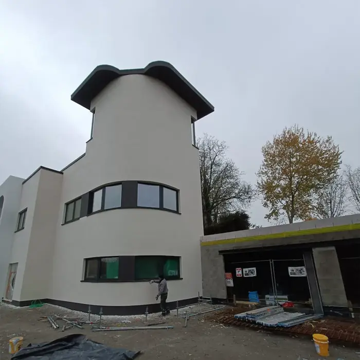
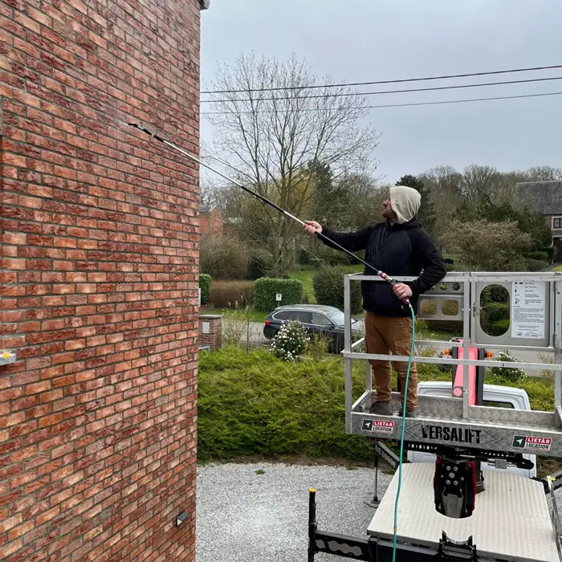
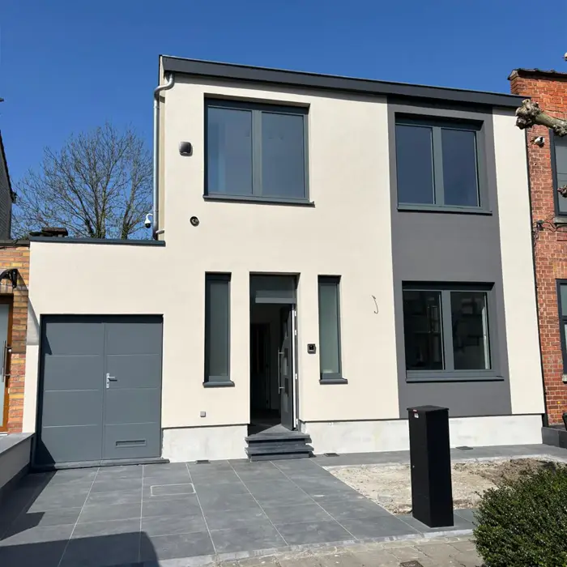
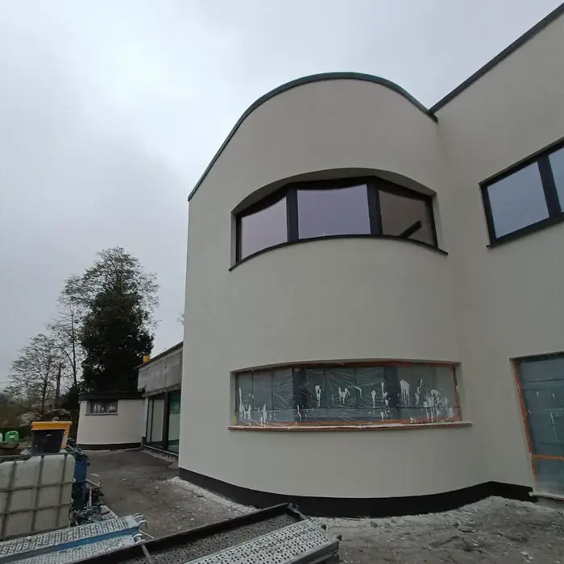
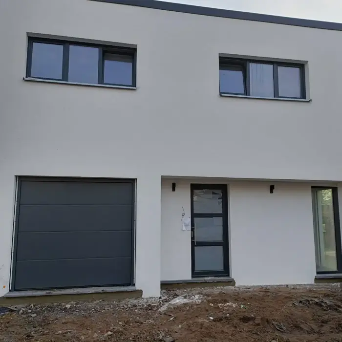

- Accueil
- Façade à Mouscron
Mouscron et environs
Isolation et rénovation de façade à Mouscron
Isolation par l'extérieur, crépi et rénovation de façade à Mouscron et dans les communes voisines. Entreprise familiale basée à Courcelles, plus de 20 ans d'expérience, devis gratuit sous 72 h.

Nos services à Mouscron

Isolation par l'extérieur à Mouscron
Isolez vos murs sans perdre de place à l'intérieur.

Crépi de façade à Mouscron
Un crépi neuf qui protège et embellit votre maison.

Rénovation de façade à Mouscron
Fissures, salissures, enduit abîmé : on remet tout à neuf.
Quelques-uns de nos chantiers
Toutes nos réalisations →


Les façades de Mouscron
Dottignies, Herseaux, Luingne… La région de Mouscron est faite en grande partie de maisons en brique rouge, souvent mitoyennes. Avec le temps, les joints se dégradent, la mousse s'installe et la façade se salit. Selon l'état des murs, un démoussage et un nettoyage suffisent parfois. Si vous voulez aussi réduire votre facture de chauffage, l'isolation par l'extérieur reste la solution la plus complète. On vous le dit franchement lors de la visite gratuite.
Communes desservies autour de Mouscron
On intervient dans le Hainaut, notamment à :
- Dottignies
- Herseaux
- Luingne
- Estaimpuis
- Comines-Warneton
Autres villes
Questions fréquentes — Mouscron
Vous vous déplacez à Mouscron ?
Oui. On intervient à Mouscron et dans les communes voisines : Dottignies, Herseaux, Luingne, Estaimpuis, Comines-Warneton. La visite est gratuite.
Le devis est-il payant ?
Non. La visite et le devis sont gratuits et sans engagement. Vous recevez le devis détaillé sous 72 h, garanti.
Quel délai pour démarrer un chantier à Mouscron ?
Ça dépend de la saison et de notre planning. On vous donne une date de démarrage avec le devis.
Faut-il un permis ?
Selon les travaux, la commune de Mouscron peut demander une déclaration ou un permis. On vous indique les démarches lors de la visite.
Isoler aujourd'hui, économiser demain
Votre devis à Mouscron, sous 72 h.
Laissez vos coordonnées, on vous rappelle pour fixer la visite. Vous préférez parler tout de suite ? Appelez-nous.
0470 17 96 39